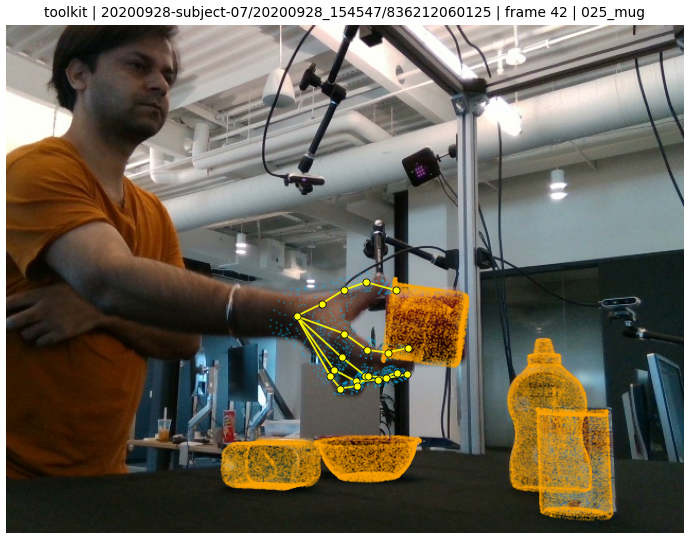
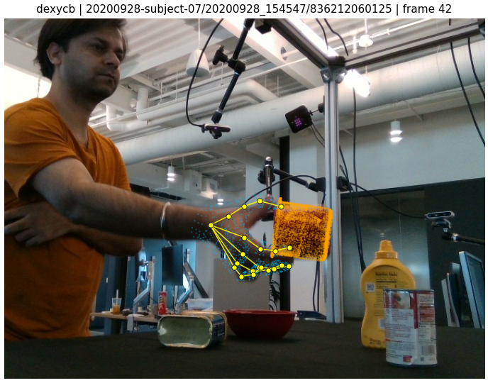
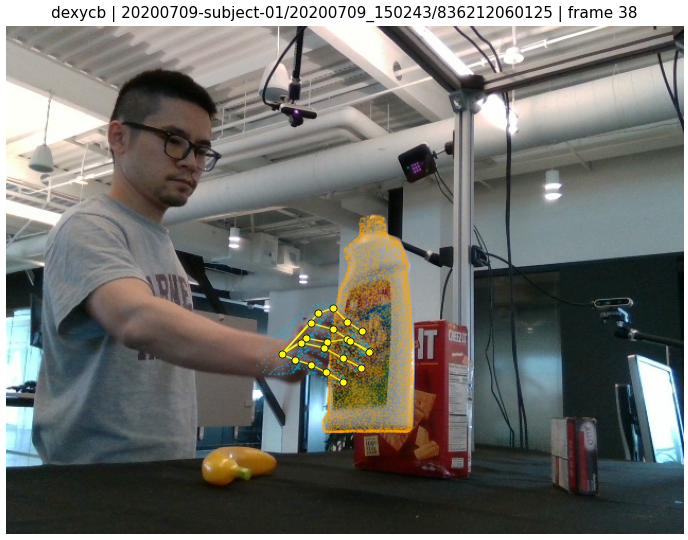
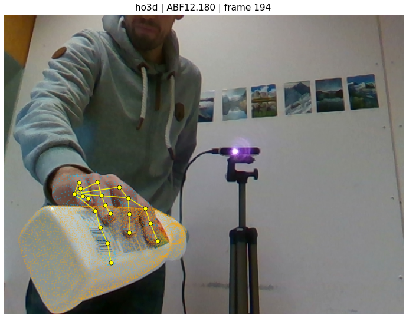

dex-ycb-toolkit (reference) — manopth +
_MANO_JOINT_CONNECTfeat/benchmark (uncommitted)
Worktree: .worktrees/feat-benchmark
Scope: benchmark/data/{dexycb,ho3d}_loader.py + benchmark/preprocessing/render_mano_overlay.py
One-line goal: figure out why the v2 DexYCB MANO overlays still looked wrong, fix the root cause, and re-publish the overlay-check page so the hand skeletons match the dex-ycb-toolkit reference render.
The v2 DexYCB overlays failed not because of bone topology — as earlier believed — but because the smplx MANO forward pass disagrees with manopth on the very same DexYCB input. An empirical diff on 20200928-subject-07/20200928_154547/frame_000011 showed wrist and all five MCP joints match to 0.00 mm, but PIP/DIP/TIP joints drift by up to 53 mm. The official dex-ycb-toolkit/examples/visualize_pose.py uses manopth; porting our two GT loaders to manopth closes the gap and the v3 overlays now line up with the toolkit reference render.
| Rev | What we tried | Why we thought it would work | Result |
|---|---|---|---|
| v1 | smplx MANO + append 5 fingertip vertices + MANO_TO_OPENPOSE permutation + OpenPose bone parents |
Prior convention from benchmark loader; comment in the renderer matched an assumed "idx,mid,pky,rng,thb" tip order. | DexYCB skeleton visibly wrong. Thumb / pinky appeared cross-wired in some frames. |
| v2 | smplx MANO + 5 appended tips + bone topology redrawn directly on the smplx 21-joint layout (no permutation) with tips [thb, idx, mid, rng, pky] at 16..20 (verts 744,320,443,554,671). |
Original MANO_TO_OPENPOSE table had tip slots in a different order than what the vertex-id convention implied; drawing bones directly on the smplx layout avoids the off-by-one. |
Subject-07 thumb-pinky sep improved to ~10 px (closed grasp, expected). But user-reported it still looked off on DexYCB. |
| + | Rendered the same 6 DexYCB sequences via official dex-ycb-toolkit (s0_train factory + manopth + _MANO_JOINT_CONNECT bone topology) as a reference. |
Side-by-side ground-truth to decide if our renderer is right. | Toolkit rendering matched the RGB hand consistently. Our v2 did not. Our renderer is wrong, not the data. |
| diag | /tmp/compare_smplx_vs_manopth.py — run both libraries on the same DexYCB input, reorder smplx's 21 joints to match manopth's meaning-per-slot, print per-joint 3D Euclidean distance. |
Isolate whether the divergence is in the MANO forward pass itself or in downstream bone drawing. | Wrist 0 mm, all 5 MCPs 0 mm, thumb chain 2–5 mm, other fingers 21–53 mm. MANO outputs themselves disagree. bug in v1/v2 loader |
| v3 | Port both GT loaders to manopth; drop MANO_FINGERTIP_VERT_INDICES; renderer uses dex_ycb_toolkit._MANO_JOINT_CONNECT verbatim. |
Match the toolkit stack exactly — same library, same config, same bone topology. | 27 overlays (3 HO3D + 6 DexYCB) re-rendered; DexYCB section on the live page now mirrors the toolkit-reference section. |
Script: /tmp/compare_smplx_vs_manopth.py — loads one DexYCB frame via dex_ycb_toolkit.factory.get_dataset("s0_train"), runs manopth and smplx on the same pose_m (48 axis-angle + 3 translation) and mano_betas (10), remaps smplx's 21 joints to the toolkit finger order, reports per-joint 3D Euclidean distance.
Frame: 20200928-subject-07/20200928_154547/color_000011.jpg · side = right
| Toolkit idx | Joint | manopth (m) | smplx-remap (m) | diff (mm) |
|---|---|---|---|---|
| 0 | wrist | [-0.239, 0.081, 1.015] | [-0.239, 0.081, 1.015] | 0.00 |
| 1 | thumb_mcp | [-0.227, 0.094, 1.050] | [-0.227, 0.094, 1.050] | 0.00 |
| 4 | thumb_tip | [-0.166, 0.158, 1.083] | [-0.164, 0.155, 1.084] | 2.66 |
| 5 | index_mcp | [-0.161, 0.101, 1.062] | [-0.161, 0.101, 1.062] | 0.00 |
| 8 | index_tip | [-0.147, 0.163, 1.077] | [-0.132, 0.138, 1.061] | 33.02 |
| 9 | middle_mcp | [-0.149, 0.107, 1.040] | [-0.149, 0.107, 1.040] | 0.00 |
| 12 | middle_tip | [-0.108, 0.168, 1.054] | [-0.122, 0.139, 1.096] | 52.95 |
| 13 | ring_mcp | [-0.157, 0.114, 1.015] | [-0.157, 0.114, 1.015] | 0.00 |
| 16 | ring_tip | [-0.138, 0.176, 1.045] | [-0.178, 0.184, 1.041] | 40.74 |
| 17 | little_mcp | [-0.168, 0.122, 0.997] | [-0.168, 0.122, 0.997] | 0.00 |
| 20 | little_tip | [-0.184, 0.166, 1.036] | [-0.171, 0.178, 1.019] | 24.35 |
Interpretation: wrist + all five MCPs agree to 0 mm because they depend only on shape β and global translation (no PCA articulation applied). Every joint downstream of an MCP diverges. The two libraries must interpret the 45-dim PCA pose basis (or the flat_hand_mean subtract) differently. Also of note: mesh vertices diverge with mean 15.4 mm, max 53 mm.
Both GT loaders and the renderer were edited to mirror the toolkit's code path.
Before (smplx)
import smplx
layer = smplx.create(
str(pkl_path), "mano",
use_pca=True, num_pca_comps=45,
is_rhand=(side=="right"),
flat_hand_mean=False,
)
out = layer(
betas=betas, global_orient=pose[:, :3],
hand_pose=pose[:, 3:], transl=transl,
)
joints16 = out.joints[0].numpy() # smplx returns 16
tips = verts[[744,320,443,554,671]] # append 5 tips
joints21 = np.concat([joints16, tips])
After (manopth) — matches examples/visualize_pose.py
from manopth.manolayer import ManoLayer
layer = ManoLayer(
flat_hand_mean=False, ncomps=45,
side=side, mano_root=mano_dir,
use_pca=True,
).eval()
verts_mm, joints_mm = layer(
pose_48, betas_10, transl_3,
)
# joints_mm is (1, 21, 3) in mm, toolkit order:
# 0=wrist, 1-4=thumb, 5-8=idx,
# 9-12=mid, 13-16=ring, 17-20=pinky
Before (smplx)
layer = smplx.create(
str(pkl), "mano",
use_pca=False, num_pca_comps=45,
is_rhand=True,
flat_hand_mean=True,
)
joints16 = out.joints[0].numpy()
tips = verts[[744,320,443,554,671]]
joints21_gl = np.concat([joints16, tips])
joints_cam = joints21_gl @ OPENGL_TO_OPENCV.T * 1000
After (manopth) — matches original_mano_reference
layer = ManoLayer(
flat_hand_mean=True, ncomps=45,
side=side, mano_root=mano_dir,
use_pca=False,
).eval()
verts_gl, joints_gl = layer(
pose_48, betas_10, transl_3,
) # both already mm
joints_cam = joints_gl[0] @ OPENGL_TO_OPENCV.T
verts_cam = verts_gl[0] @ OPENGL_TO_OPENCV.T
Replaced the v2 SMPLX_MANO_BONES (which presumed the smplx layout with tips at 16..20 in order thb,idx,mid,rng,pky) with dex_ycb_toolkit._MANO_JOINT_CONNECT verbatim:
MANO_JOINT_CONNECT = [
(0, 1), (1, 2), (2, 3), (3, 4), # thumb
(0, 5), (5, 6), (6, 7), (7, 8), # index
(0, 9), (9,10), (10,11), (11,12), # middle
(0,13), (13,14), (14,15), (15,16), # ring
(0,17), (17,18), (18,19), (19,20), # pinky
]
manopth is not pip-installed. The two loaders both do:
_MANOPTH_SYS_PATHS = [
"/mnt/afs/haonan/hoi3r/HOI3R/benchmarks_hoi/H2OTR/manopth",
"/mnt/afs/haonan/hoi3r/HOI3R/benchmarks_hoi/ghop/manopth",
]
def _ensure_manopth_on_path() -> None:
for p in _MANOPTH_SYS_PATHS:
if Path(p, "manopth", "manolayer.py").is_file():
if p not in sys.path:
sys.path.insert(0, p)
return
raise ImportError("manopth source not found.")
DexYCB subject-07 / 20200928_154547 / frame 42 — toolkit reference vs v3 loader, same intrinsics, same RGB:

_MANO_JOINT_CONNECT
Cross-subject (subject-01, bleach cleanser) and HO3D (ABF12, bleach cleanser) sanity checks — same loader after the port:


Full 27-panel page: updates/2026-04-17-mano-overlay-check.html
feat/benchmark) — uncommitted| File | Change |
|---|---|
benchmark/data/dexycb_loader.py | smplx → manopth; dropped MANO_FINGERTIP_VERT_INDICES; 21-joint output used directly; module docstring updated (±107 LOC) |
benchmark/data/ho3d_loader.py | smplx → manopth (flat_hand_mean=True, use_pca=False); kept OpenGL→OpenCV flip; dropped fingertip-vertex append (±90 LOC) |
benchmark/preprocessing/render_mano_overlay.py | Replaced SMPLX_MANO_BONES with MANO_JOINT_CONNECT (toolkit). Added --dexycb-subjects CLI flag earlier in the session (used to render cross-subject panel). |
feat/benchmark yet — user explicitly held back to review the live page first. Three files edited in place on the remote.
HOI3R-project-tracking/main) — pushed| SHA | Message |
|---|---|
14dad3f | mano-overlay v2: skeleton topology fix via original_mano_reference bundle |
82288ae | mano-overlay: add 3 DexYCB cross-subject sequences (subj 01/04/10) |
c0d6dd9 | mano-overlay: add dex-ycb-toolkit reference render + fix object labels |
5d6c54f | mano-overlay v3: port loaders smplx → manopth; bones = toolkit _MANO_JOINT_CONNECT |
| Bug | Severity | Where | Fix |
|---|---|---|---|
| smplx MANO forward disagrees with manopth by up to 53 mm on DexYCB pose_m | P0 | dexycb_loader._mano_forward, ho3d_loader._mano_forward_ho3d | Swap smplx → manopth with the toolkit config |
Renderer drew bones on SMPLX_MANO_BONES assuming fingertip vertex-id order (thb,idx,mid,rng,pky) | P1 | render_mano_overlay.py | Use _MANO_JOINT_CONNECT (contiguous finger chains) |
Overlay-check page labelled three subject-07 sequences as 021_bleach_cleanser | P2 | published HTML | Pulled correct objects from ycb_grasp_ind → _YCB_CLASSES: mug, extra_large_clamp, foam_brick |
| # | Discovery | Flag |
|---|---|---|
| 1 | For the DexYCB/HO3D MANO pipeline, smplx is not a drop-in replacement for manopth. Their PCA pose basis / flat_hand_mean convention diverge enough (peak 53 mm on articulated joints) that downstream metrics and losses built on top of smplx-MANO joints will be biased relative to the toolkit's published numbers. |
FINDING |
| 2 | Toolkit-canonical 21-joint order is 0=wrist, 1-4=thumb, 5-8=index, 9-12=middle, 13-16=ring, 17-20=pinky. Manopth emits this directly; nothing to append. This is what dex_ycb_toolkit._MANO_JOINTS / _MANO_JOINT_CONNECT codify and what should be used for any future bone / parent-array code in this repo. |
FINDING |
| 3 | Three previously-published session labels for subject-07 sequences were wrong. Source of truth: sample["ycb_grasp_ind"] indexes into sample["ycb_ids"], then into dex_ycb_toolkit.dex_ycb._YCB_CLASSES. Using the meta.yml's raw ycb_ids list without the grasp index gives the scene objects, not the grasped one. |
FIX |
| 4 | The original_mano_reference_20260417_lightweight.tar.gz bundle at /mnt/afs/haonan/hoi3r/HOI3R/ gives us the authoritative per-dataset MANO configs (manopth flags, joint-order constant). It's the right "second opinion" to consult before trusting any new MANO-based loader. |
FINDING |
| 5 | Debug-container SSH can be unavailable for 30+ minutes after the container is reprovisioned (observed pod change qrqq9 → strl6). Rapid reconnect attempts prolong the block — one probe per wake-up is the right pattern. |
OPS |
| Dataset | MANO library | Config | Output space | Output units | Joint order |
|---|---|---|---|---|---|
| DexYCB | manopth | flat_hand_mean=False, ncomps=45, use_pca=True | OpenCV camera (no flip) | mm | toolkit canonical (tips 4/8/12/16/20) |
| HO3D | manopth | flat_hand_mean=True, ncomps=45, use_pca=False | OpenCV camera (OpenGL→OpenCV flip) | mm | toolkit canonical |
| HOT3D | (untouched this session) | native HOT3D SDK | camera | mm | manopth_mano_21 |
| Priority | Task | Owner / context |
|---|---|---|
| P0 | Commit the three patched files on feat/benchmark once the user confirms the live v3 page looks correct. Message template: fix(benchmark): port DexYCB/HO3D GT loaders to manopth; fix 53mm joint divergence. |
Claude/user — awaiting visual sign-off on live page |
| P1 | Audit any adapter / loss / metric code that previously consumed the smplx-ordered joints (index 16 = thumb_tip). Old callers indexing by specific slot may now point at the wrong joint. Grep: MANO_FINGERTIP_VERT_INDICES, any hard-coded joints[..., 16]. |
benchmark/adapters/{dcf,fp_hawor,magichoi}/*_utils.py, hot3d_loader.py |
| P1 | Complete HOT3D extraction (~60/152 GB at session start) and add HOT3D to the overlay page. HOT3D SDK emits joints in the same toolkit canonical order, so no separate bone topology is needed. | .worktrees/feat-benchmark |
| P1 | Re-run numeric MANO gate on HO3D + DexYCB under the v3 loader; re-issue the earlier PASS claim (the previous PASS was on smplx output, which we now know was biased by up to 53 mm). | benchmark/preprocessing/mano_validation.py |
| P2 | Phase 2 step 3: first real predictions on 1–2 test sequences with DCF / FP+HaWoR / MagicHOI adapters using the v3 GT as reference. | benchmark/adapters/* |
| P2 | Consider making manopth a proper repo-level dependency instead of the sys.path hack. Current loaders search benchmarks_hoi/H2OTR/manopth and benchmarks_hoi/ghop/manopth — fragile under worktree moves. |
infra |